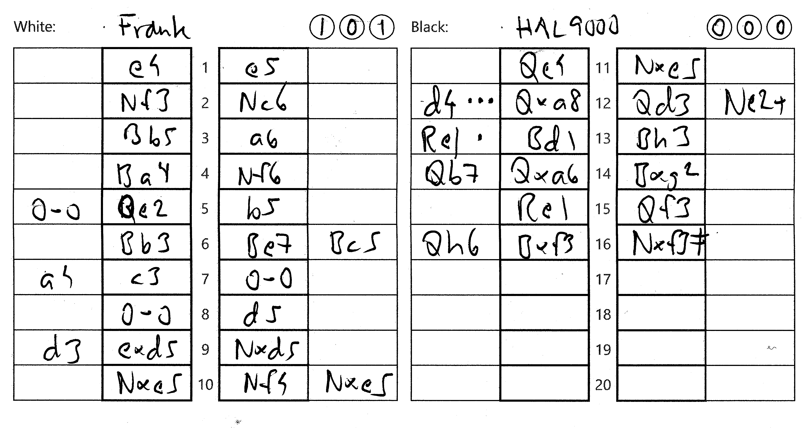

Panorama
Det här schackprotokollet är bredare än Landskap, därav namnet Panorama.
Det innebär att protokollet får bättre plats när schackbrädena är stora.
Höjden är 105 millimeter istf för det vanligare 210 mm (A5 porträtt).
Det är avsett att kompletteras med en analys i de lediga kolumnerna.
Har man ingen stormästare till hands, får man nöja sig med t ex Lichess.
I de tre cirklarna kan man skriva in antalet Blunders, Misstakes och Inaccuracies.
| Analys | Category | loss in cp | Circle |
|---|---|---|---|
| move ••• | Blunder | 300- | Left |
| move •• | Mistake | 100-300 | Middle |
| move • | Inaccuracy | 50-100 | Right |
| move | Good | 20-50 | |
| Excellent | 0-20 |
Vid utskrift rekommenderas dubbelsidigt och standardmarginaler.
Om man har tillgång till en pappersskärare (eller är händig med saxen) kan man få ut två protokoll per A4.
Kommentar till protokollet ovan
5. Qe2 är inte det bästa draget. 5. 0-0 är bäst.
12. Qxa8 är en Blunder. 12. d4 är bättre.
13. Bd1 är en Inaccuracy. 13. Re1 är bättre.
HAL 9000 spelade utmärkt.
Det fanns dock tre drag som var suboptimala.
Här är pythonkoden om du vill förbättra protokollet.